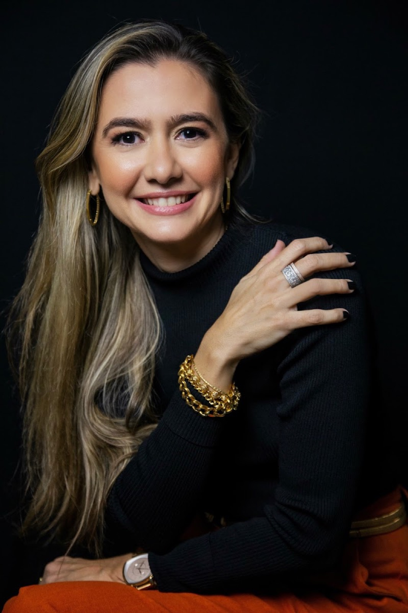
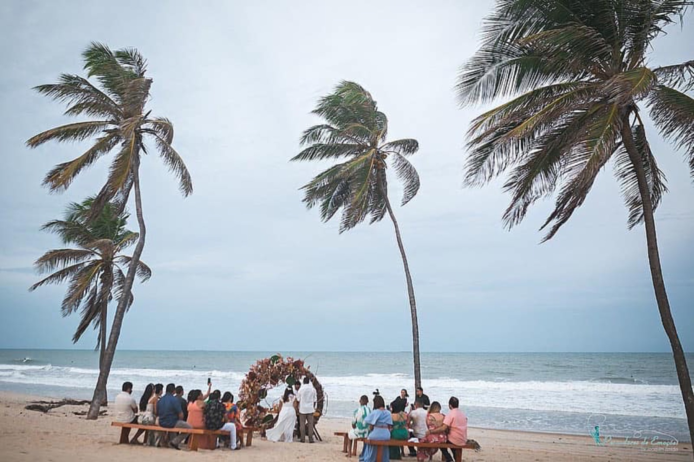

Assessoria e cerimonial para quem quer uma profissional dedicada ao lado em cada escolha, e uma condução impecável no grande dia.

“Cada detalhe do casamento que eu fechava, eu pensava o que ela iria achar e sempre consultava.”
Palavras retiradas de avaliações públicas no Google.
Você escolhe o quanto quer de companhia. A Ivana e a equipe cuidam do resto com calma e atenção a cada detalhe.
Acompanhamento do planejamento: escolhas de fornecedores, orçamentos e decisões conversadas de perto, para você nunca decidir sozinha.
Roteiro, entradas, horários e fornecedores conduzidos pela equipe, para os noivos e a família só viverem a festa.
Aniversários e celebrações que pedem a mesma organização e o mesmo requinte de um casamento.

Salão, igreja ou beira-mar: a condução cuidadosa vai junto.
A Ivana, sem dúvida, foi minha melhor escolha. Tudo partiu dela… Excelente profissional, dedicada e amiga!
Lara · avaliação no GoogleÓtima profissional, paciente, prestativa e educada. Recomendo.
Gladson · avaliação no GoogleSimplesmente encantador.
Luis · avaliação no GoogleEquipe maravilhosa.
Ana · avaliação no GoogleRequinte e qualidade.
Avaliação no GoogleTrechos de avaliações públicas no Google.
Cinco perguntas rápidas, um cronograma sugerido e, no final, suas respostas seguem organizadas para o WhatsApp da Ivana.
Chame no WhatsApp com a data e o estilo do seu casamento para conversar com a Ivana.